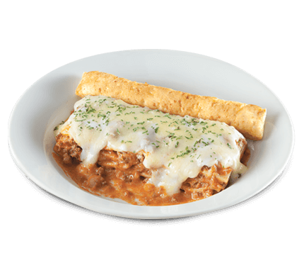

Lasagna Recipe

Greenwich-Style Lasagna Supreme Recipe
Ever wonder how to achieve a lasagna just like how
Greenwich serve their Lasagna Supreme?
This is the recipe you are looking for.
Ingredients
- 1 pound ground beef
- 3/4 cup onion chopped
- 2 garlic cloves minced
- 2 tablespoons olive oil
- 3 ounces tomato paste
- 1 cup water
- 1/2 teaspoon Each of basil parsley and oregano
- salt and pepper to taste
- 1 pound ricotta cheese
- 8 ounces Mozzarella cheese shredded or thinly sliced
- shredded or thinly sliced
- 4 ounces lasagna noodles
Steps
- Lightly brown beef, onion and garlic in olive oil. Add tomatoes, tomato paste, water, basil, parsley, oregano, salt and pepper.
- Simmer uncovered, stirring occasionally for 30 minutes. Cook lasagna as directed on box; drain.
- In 13x9x2 baking pan, spread about 1 cup sauce. Then alternate layers of lasagna, sauce, ricotta, mozzarella, and Parmesan cheese; ending with sauce, mozzarella, and Parmesan.
- Cover with foil and bake at 350: for 40-50 minutes. Allow to stand for 15 minutes.